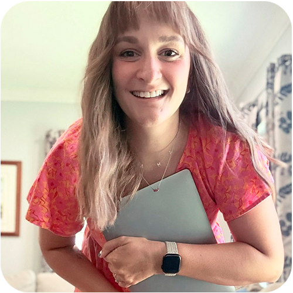

Hi I'm Shelley,
a graphic designer with roots in both print and digital design who recently fell head first into the world of UX/UI and honestly never looked back. I taught myself Figma, dove deep into UX principles, and have been building out a portfolio that reflects both sides of my design brain — the side that obsesses over kerning and the side that can't stop thinking about user flows. My background in graphic design means I bring a seriously sharp design eye to every digital experience I create. When I'm not pushing pixels you can find me logging miles on a run or crocheting something green, because yes, green is my favorite color and I will design a whole color palette around it without a single apology. I'm actively looking for a remote UX/UI design role where I can bring both my visual design chops and my UX thinking to a team that loves great design as much as I do.
Download My Resume